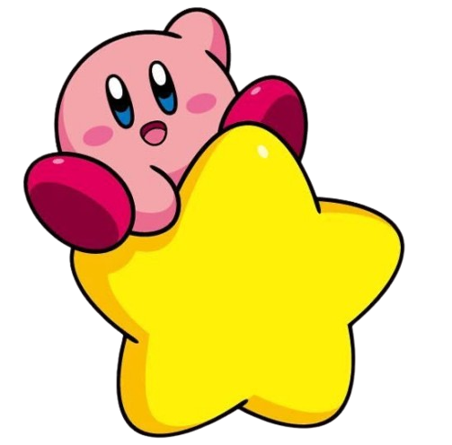
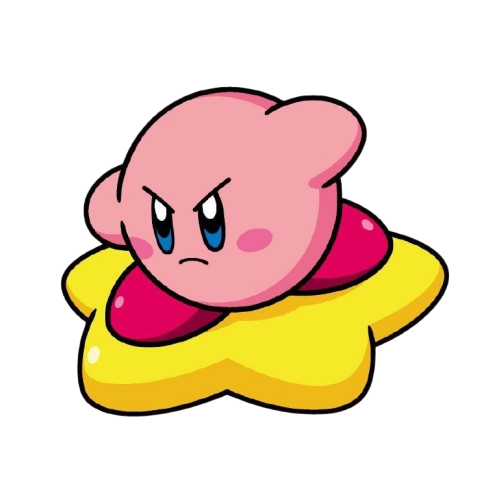
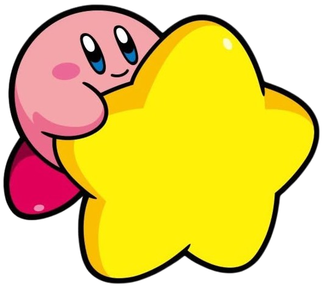
KIRBY 3D
MODELADO 3D · TEXTURIZADO · ILUMINACIÓN · RENDER
DE 2D A 3D
Proyecto de modelado 3D inspirado en Kirby,
desarrollado a partir de una referencia 2D
y llevado a un entorno bidimensional.
El proceso incluyó modelado, texturizado,
iluminación y renderizado
del personaje en un estilo cartoon.
DESARROLLO
DEL PERSONAJE
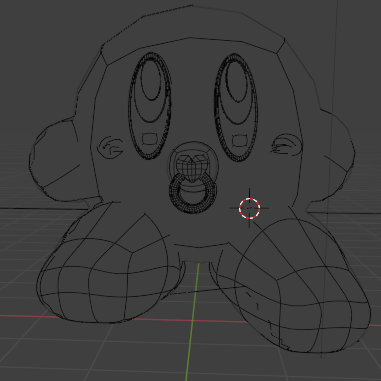
01 / MODELADO · WIREFRAME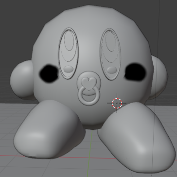
02 / VOLUMEN Y FORMAS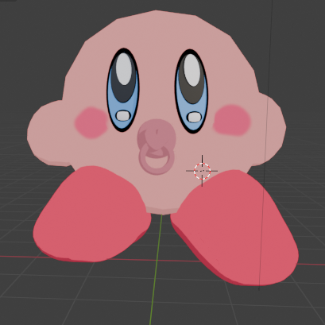
03 / COLOR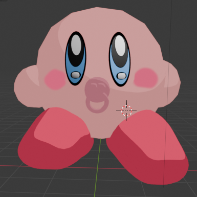
04 / RESULTADO FINALCreación del modelo base de Kirby con formas simples, cuidando su silueta y proporciones características.
Aplicación de materiales y colores, explorando texturas suaves y un estilo cartoon.
Ajuste de luces y sombras para resaltar los volúmenes y colores del personaje.
Render final con composición de color y pequeños ajustes en postproducción.
CATDOG 3D
MODELADO 3D · ESCULTURA DIGITAL · MATERIALES
DE 2D A 3D
Proyecto de modelado 3D inspirado en CatDog,
desarrollado a partir de referencias del personaje.
El proceso incluyó la construcción de las formas,
modelado de detalles, aplicación de materiales
y presentación final del personaje.
DESARROLLO
DEL PERSONAJE
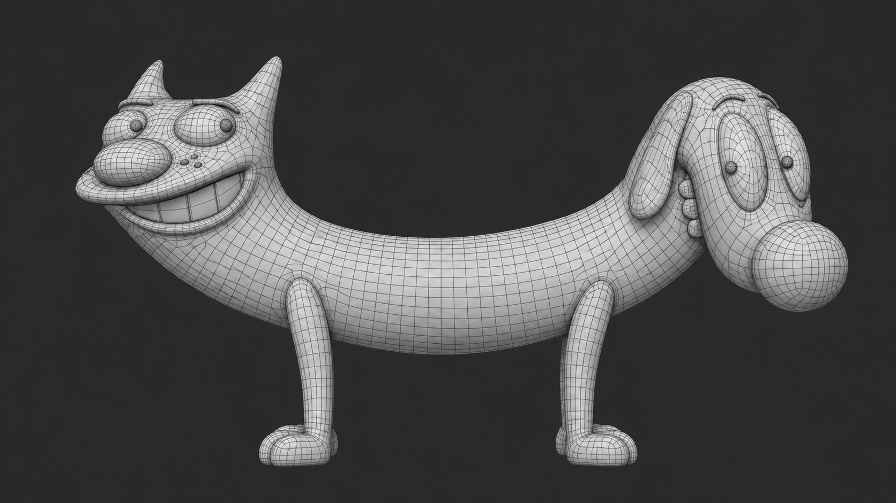
01 / MODELADO · WIREFRAMEConstrucción de la estructura y formas principales del personaje.
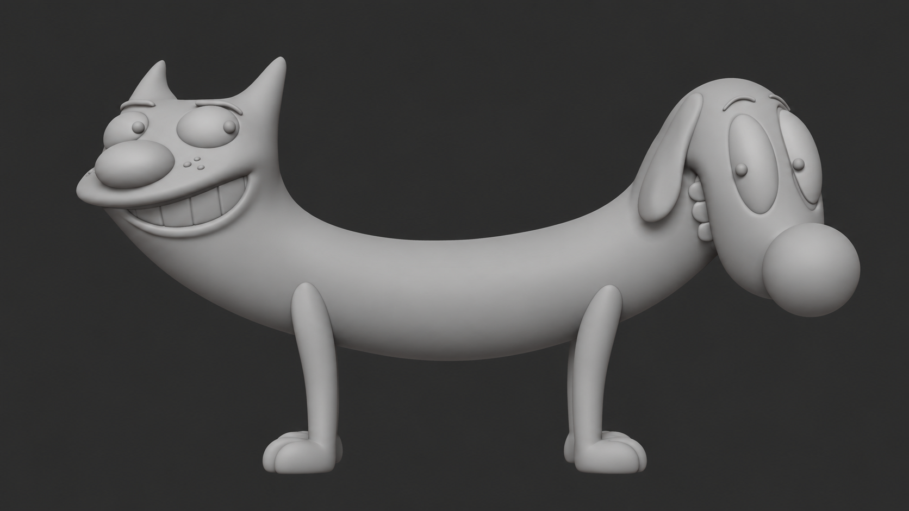
02 / VOLUMEN Y FORMASDesarrollo de volúmenes y detalles para definir la apariencia del personaje.
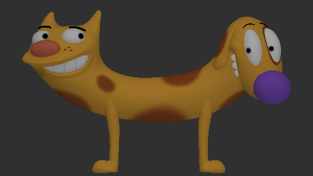
03 / COLOR Y MATERIALESAplicación de colores y materiales inspirados en la referencia original.
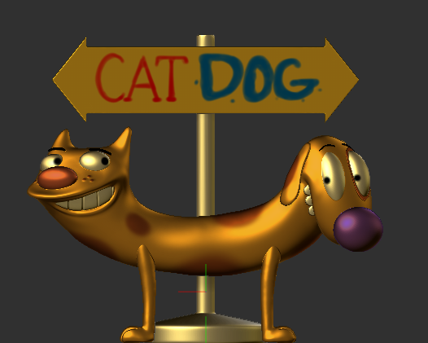
04 / RESULTADO FINALPresentación final del personaje con materiales, iluminación y composición.
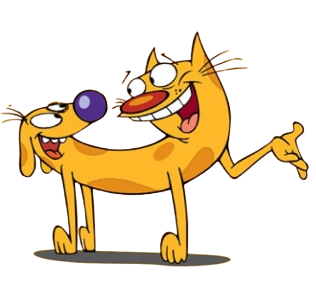
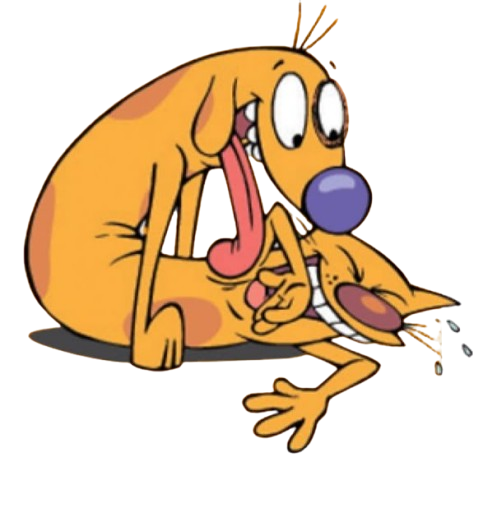
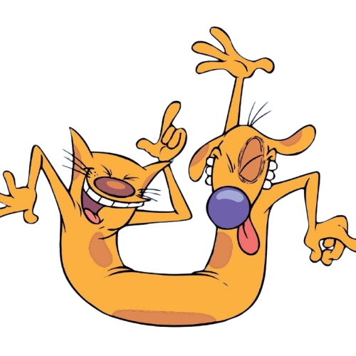
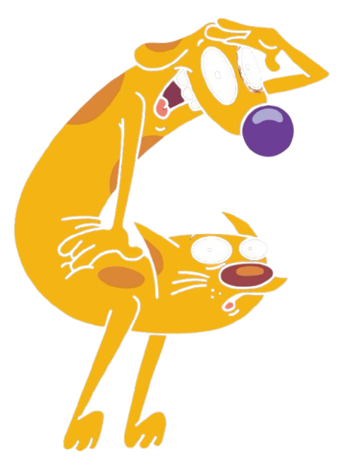
HEAD & SHOULDERS 3D
MODELADO 3D · TEXTURIZADO · ILUMINACIÓN · RENDER
PROYECTO
MODELADO DE
PRODUCTO
Proyecto de modelado 3D de un envase de Head & Shoulders, desarrollado a partir de una referencia de producto. El proceso incluyó modelado, aplicación de materiales y etiqueta, iluminación y creación de gotas de agua para reforzar la presentación visual del producto.
DESARROLLO
DEL PRODUCTO
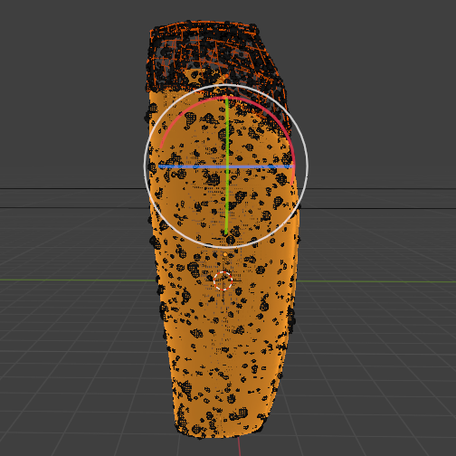
01 / MODELADO · MALLAConstrucción de la geometría base y estructura principal del envase.
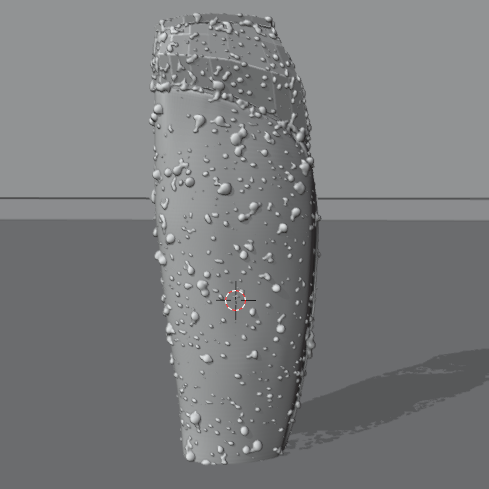
02 / MODELADO BASEDesarrollo de la forma y proporciones características del producto.
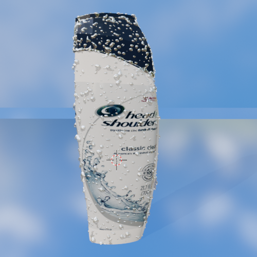
03 / COLOR Y MATERIALESAplicación de materiales, color y etiqueta sobre el modelo 3D.
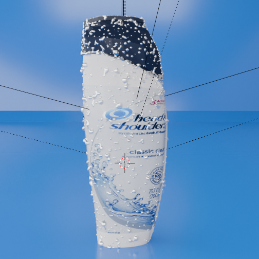
04 / RESULTADO FINALIntegración de detalles, iluminación y presentación final del producto.
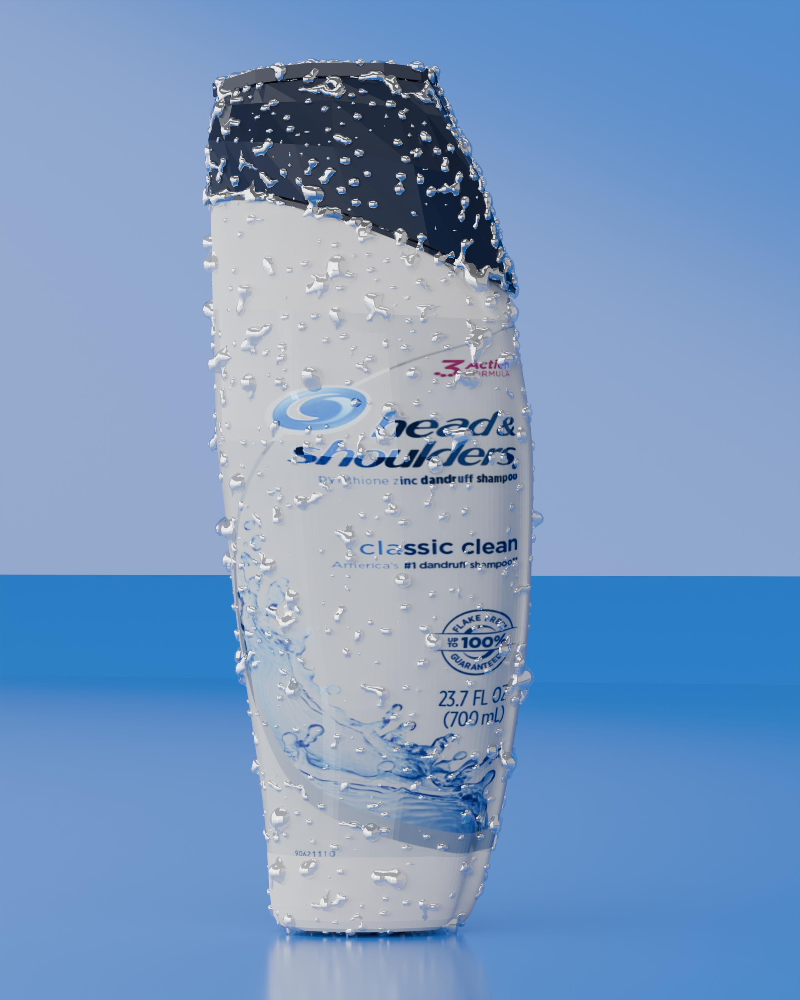
05 / RENDERRender final del producto con iluminación, composición y ambientación visual.
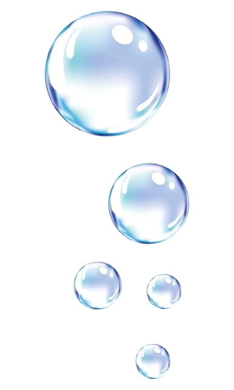
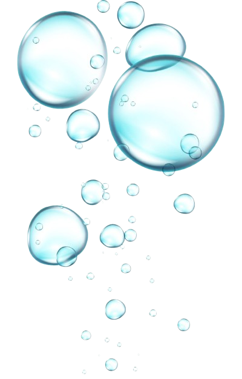
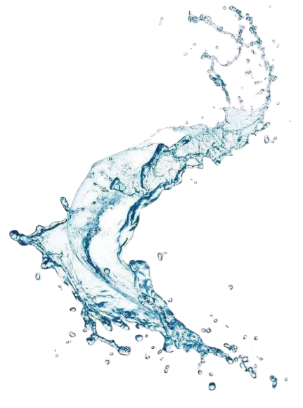
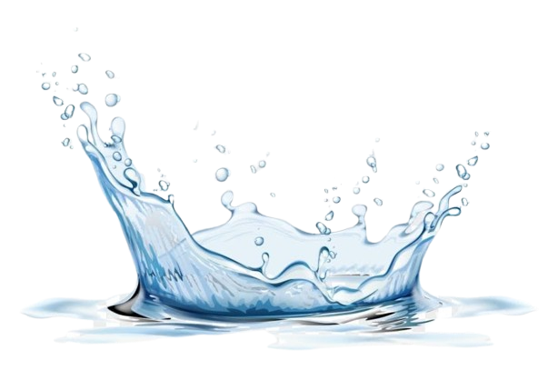
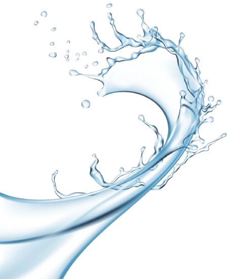